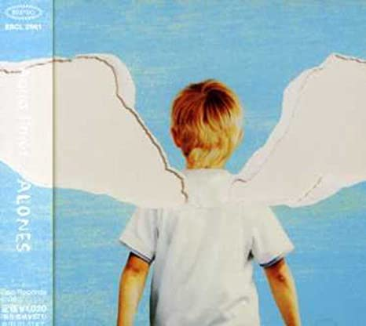
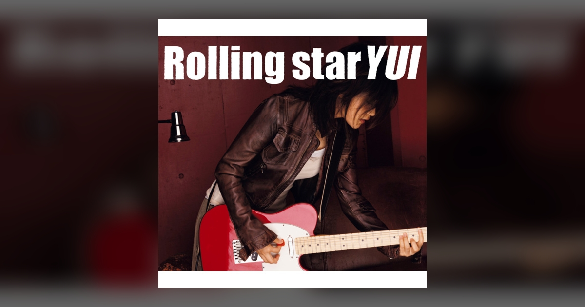
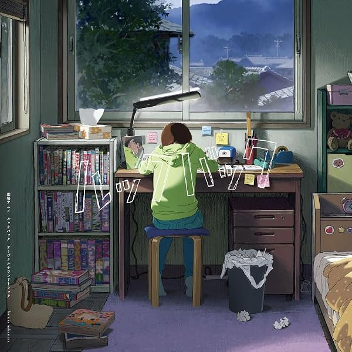

好きな曲 TOP3
1. 「ALONES」Aqua Timez

どんな曲か 下書き：アニメ『BLEACH』のオープニングテーマ。疾走感のあるバンドサウンドで、孤独を抱えながらも前へ進む気持ちを歌った曲です。
うつむいた時こそ聴きたい。
2. 「Rolling star」YUI

どんな曲か 下書き：こちらもアニメ『BLEACH』のオープニングテーマ。ギターの勢いと、夢を追うまっすぐな歌詞が印象的なロックチューンです。
前を向く前こそ聴きたい。
3. 「マヨイガ」羊文学

どんな曲か 下書き：羊文学の、浮遊感と透明感のある一曲。静かな音の重なりが、気持ちをそっとほぐしてくれます。
優しさを感じたい時こそ聴きたい。